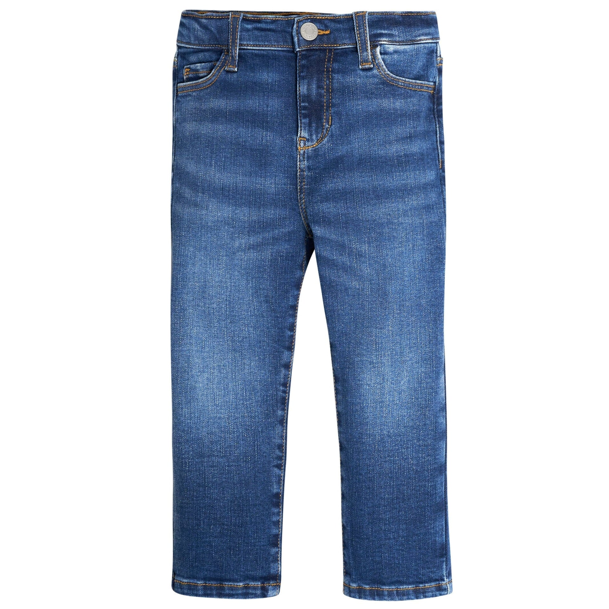

Page Second
What I am doing now is making the second page of the website. I am not sure what to write here either. I am a student at USC IYA program, which is the coolest program in the school. No Actually in the world.

This is the first page of the website and I really have no idea what to write here. What I am doing rn is making some simple slides with jQuery.
What I am doing now is making the second page of the website. I am not sure what to write here either. I am a student at USC IYA program, which is the coolest program in the school. No Actually in the world.
What I am wearing right now is a white t-shirt that I bought from Vietnam, and a jeans. I am wearing a white hat that I really like, but the reason why I am wearing it is because it is I didn't wash my hair today.
I am interested in the intersection of Finance, technology and design. I hope to work in this field in the future and that's the reason why I am choosing this program.
It's finally the last page of the website, I really want to add some words but I don't know what to write. Yes, I am Weston Guo, and I use Cursor to help me write the css design of the page